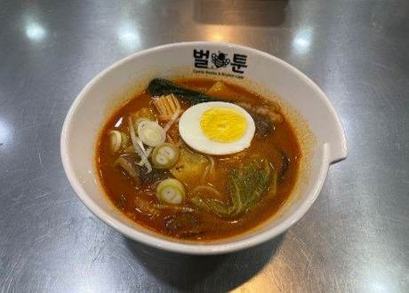
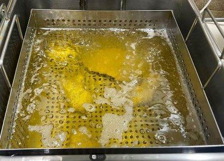
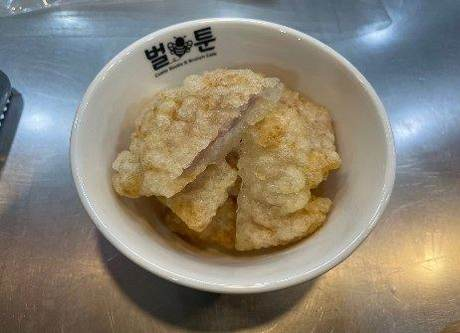
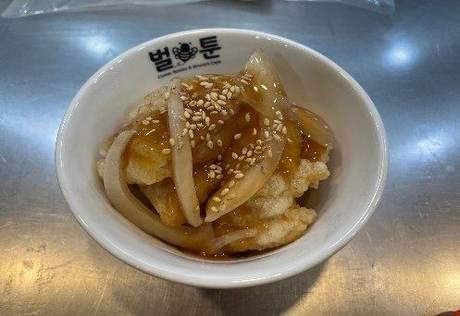
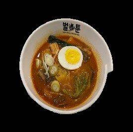

| 메뉴명 | 마라탕 세트 |
|---|---|
| 판매가격 | 13,500원 |
| 원재료 | 꿔바로우, 탕수육소스, 양파슬라이스, 볶음참깨, 마라탕, 계란, 대파슬라이스 |
| 사용 부자재 | 라면용기, 우동국물 용기 |
| 메뉴특징 | 바삭 쫀득 통등심 꿔바로우와 새콤달달한 소스가 어우러진 정통의 맛! |
조리방법

1
마라탕 1인분을 끓여내어 계란 반개, 대파슬라이스 5g을 토핑한다.
(*마라탕 조리법 참조)
마라탕 1인분을 끓여내어 계란 반개, 대파슬라이스 5g을 토핑한다.
(*마라탕 조리법 참조)

2
소분된 꿔바로우 1봉을 뜯어 180도 튀김기에서 5분간 튀긴다.
소분된 꿔바로우 1봉을 뜯어 180도 튀김기에서 5분간 튀긴다.

3
전자렌지용기에 탕수육소스 50g, 양파슬라이스 10g을 담아 전자레인지에 1분간 데운다.
전자렌지용기에 탕수육소스 50g, 양파슬라이스 10g을 담아 전자레인지에 1분간 데운다.

4
튀긴 꿔바로우의 기름을 털고 가위로 반을 잘라 우동장국 그릇에 담는다.
튀긴 꿔바로우의 기름을 털고 가위로 반을 잘라 우동장국 그릇에 담는다.

5
데운 탕수육소스를 꿔바로우 위에 뿌려주고 볶음참깨를 뿌린다.
데운 탕수육소스를 꿔바로우 위에 뿌려주고 볶음참깨를 뿌린다.

6
트레이에 마라탕, 꿔바로우, 단무지를 함께 제공한다.
트레이에 마라탕, 꿔바로우, 단무지를 함께 제공한다.